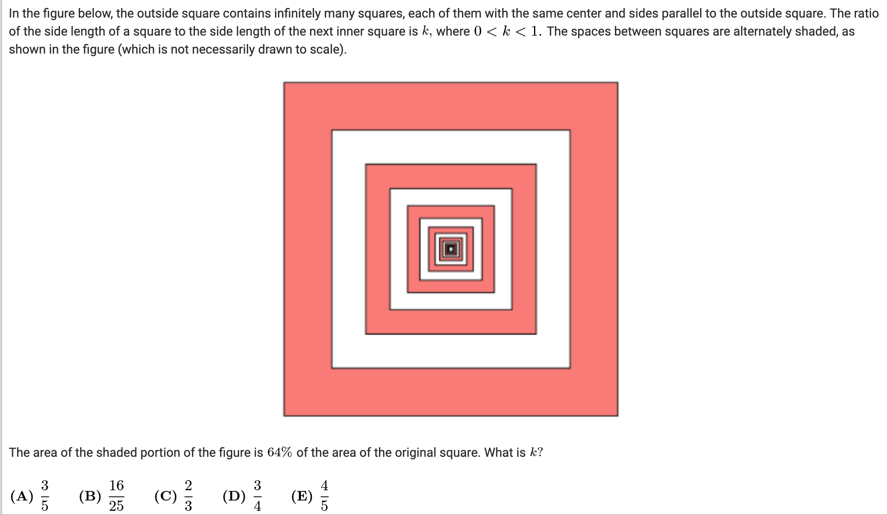

Solve this math problem, and provide detailed solution steps.

Solve this math problem, and provide detailed solution steps.

<think>
Okay, let's see. The problem says there's a square with infinitely many smaller squares inside, each centered and sides parallel to the original. The ratio of side length of a square to the next inner one is k, where 0 < k < 1. The spaces between the squares are alternately shaded. The shaded area is 64% of the original square, and we need to find k.
Hmm, okay. Let me visualize the figure. The outermost square is red (shaded), then a white square inside, then red again, white, etc., alternating. So the shaded regions are the red parts: first ring (outer square minus inner square), then the next ring (between second and third square), etc. Wait, actually, starting from the outside: the first shaded region is the area between the largest square and the next inner square. Then the next space is unshaded (white), then shaded again, so maybe every other ring is shaded.
Wait, the problem states: "the spaces between squares are alternately shaded". So the space between the outside square and the first inner square is shaded (red), then the space between that inner square and the next is unshaded (white), then between next and next is shaded (red), etc. So the shaded portions are the areas between square n and square n+1 where n is even? Wait, starting from the outside:
Original square (side length S) has area S^2. Then the next inner square has side length kS, area k^2 S^2. The space between them (shaded) would be S^2 - k^2 S^2 = S^2(1 - k^2). But wait, the next inner square after that would have side length k*(kS) = k^2 S, so the space between the second inner square and the third would be k^2 S^2 - k^4 S^2 = k^2 S^2(1 - k^2), etc. But the shaded areas alternate. Since the first space (outermost ring) is shaded, the next space (between 1st and 2nd inner square) is white, then shaded, etc.
So total shaded area is [S^2 - (kS)^2] + [(k^2 S)^2 - (k^3 S)^2]? Wait, no. Wait: First shaded ring: Area = S^2 - (kS)^2.
Then the next inner square is kS side, next inner square is k*(kS) = k^2 S. The space between the first inner square (kS) and second inner square (k^2 S) is white (since alternately shaded), so not counted in shaded. Then the next space between k^2 S and k^3 S is shaded again. So shaded areas are:
First ring (outer): S^2 - (kS)^2,
Third ring: (k^2 S)^2 - (k^3 S)^2,
Fifth ring: (k^4 S)^2 - (k^5 S)^2,
And so on.
Wait, but the problem states "the spaces between squares are alternately shaded", so starting with shaded at the outermost space. So yes, shaded areas are the rings between square 1 and 2, 3 and 4, 5 and 6, etc.
Therefore, total shaded area is sum_{n=0 to infinity} [ (k^{2n} S^2) - (k^{2n+1} S^2) ) ] ?
Wait, perhaps better to model the squares as follows:
Let A0 be the area of the original square: A0 = S^2.
A1 = k^2 S^2 (area of first inner square)
A2 = k^4 S^2 (second inner square)
Wait, since each subsequent square has side length multiplied by k. So if A0 is the area of the outermost square (side S), then A1 = (kS)^2 = k^2 S^2, A2 = (k^2 S)^2 = k^4 S^2, etc.
The shaded regions are A0 - A1 (outer ring), A2 - A3 (next shaded ring), A4 - A5, etc. Because between A1 and A2 is a white space, since alternately shaded.
Wait, original square (shaded), then inside is white, then shaded, white, etc. Wait the figure shows outermost square is red (shaded), then white, red, white, etc. So yes: outermost ring (between A0 and A1) is shaded; then ring between A1 and A2 is white; ring between A2 and A3 is shaded; etc. Therefore, shaded areas are:
(A0 - A1) + (A2 - A3) + (A4 - A5) + ...
Which equals (A0 - A1) + (A2 - A3) + (A4 - A5) + ...
Expressed in terms of k:
Each term: (k^{2n} S^2 - k^{2n + 1} S^2 ) for n starting at 0?
Wait:
First shaded ring: A0 - A1 = S^2 - k^2 S^2 = S^2(1 - k^2)
Second shaded ring: A2 - A3 = k^4 S^2 - k^6 S^2 = k^4 S^2(1 - k^2)
Third shaded ring: A4 - A5 = k^8 S^2 - k^{10} S^2 = k^8 S^2(1 - k^2)
Etc.
So total shaded area = (1 - k^2) S^2 [1 + k^4 + k^8 + k^{12} + ...]
This is a geometric series with first term 1 and common ratio r = k^4.
Sum of infinite geometric series: 1 / (1 - r) = 1 / (1 - k^4), provided |r| < 1.
So total shaded area = (1 - k^2) S^2 * [1 / (1 - k^4)]
Wait, let me check:
Wait the series after factoring out (1 - k^2) S^2 is:
(1 - k^2) S^2 [1 + k^4 + k^8 + ... ] = (1 - k^2) S^2 * [1 / (1 - k^4)] because the sum of the series 1 + x + x^2 + ... = 1/(1 - x), here x = k^4.
But note that 1 - k^4 = (1 - k^2)(1 + k^2). Therefore:
Total shaded area = (1 - k^2) S^2 * [1 / ((1 - k^2)(1 + k^2))] ) = S^2 / (1 + k^2)
Wait, that simplifies nicely:
(1 - k^2)/(1 - k^4) = (1 - k^2)/[(1 - k^2)(1 + k^2)] = 1/(1 + k^2). So total shaded area is S^2 * [1/(1 + k^2)].
Wait, but according to the problem statement, the shaded portion is 64% of the original square. So shaded area = 0.64 S^2.
So setting up:
S^2 / (1 + k^2) = 0.64 S^2
Cancel S^2:
1 / (1 + k^2) = 0.64
Then 1 + k^2 = 1 / 0.64 = 1.5625
So k^2 = 1.5625 - 1 = 0.5625
Thus k = sqrt(0.5625) = 0.75 = 3/4.
Check options: Option D is 3/4.
Wait, but let me verify this calculation again.
Shaded area sum: (S^2 - k^2 S^2) + (k^4 S^2 - k^6 S^2) + (k^8 S^2 - k^{10} S^2) + ...
Factor out S^2:
S^2 [ (1 - k^2) + (k^4 - k^6) + (k^8 - k^{10}) + ... ]
= S^2 [ (1 - k^2) + k^4(1 - k^2) + k^8(1 - k^2) + ... ]
= S^2 (1 - k^2) [ 1 + k^4 + k^8 + ... ]
Sum inside the brackets: infinite geometric series with ratio r = k^4.
Sum = 1 / (1 - k^4)
So total shaded area = S^2 (1 - k^2) * [1 / (1 - k^4)] = S^2 (1 - k^2) / [ (1 - k^2)(1 + k^2) ) ] = S^2 / (1 + k^2)
Yes, so shaded area = S^2 / (1 + k^2)
Given that this equals 64% of S^2:
S^2 / (1 + k^2) = 0.64 S^2 => 1 / (1 + k^2) = 0.64 => 1 + k^2 = 1 / 0.64 = 1.5625 => k^2 = 0.5625 => k = 0.75 = 3/4.
Which is option D. So the answer should be D.
Wait, but let me cross-verify. If k = 3/4, then k^2 = 9/16.
Shaded area = S^2 / (1 + 9/16) = S^2 / (25/16) = (16/25) S^2 = 0.64 S^2. Which matches exactly 64%. Perfect. So yes, k = 3/4.
Hence, option D.
</think>
<answer>
The problem involves calculating k, the ratio of the side lengths of successive nested squares, given that the shaded area (which alternates between the rings between squares) is 64% of the original square's area.
Step 1: Understand the structure of the shaded area
- The original square has side length S, so its area is S^2.
- Each inner square has side length scaled by k relative to the outer square:
- First inner square: side kS, area k^2S^2
- Second inner square: side k^2S, area k^4S^2
- Third inner square: side k^3S, area k^6S^2
- The shaded regions alternate (starting with the outer ring), so shaded area is:
(S^2 - k^2S^2) + (k^4S^2 - k^6S^2) + (k^8S^2 - k^10S^2) + ...
Step 2: Sum the shaded area as a geometric series
Factor out S^2(1 - k^2):
Shaded Area = S^2(1 - k^2)[1 + k^4 + k^8 + ...]
This is a geometric series with first term 1 and common ratio r = k^4, so:
1 + k^4 + k^8 + ... = 1 / (1 - k^4)
Therefore:
Shaded Area = S^2(1 - k^2) / (1 - k^4)
Since 1 - k^4 = (1 - k^2)(1 + k^2):
Shaded Area = S^2 / (1 + k^2)
Step 3: Use the given percentage
Given shaded area is 64% of the original square:
S^2 / (1 + k^2) = 0.64S^2
Divide by S^2:
1 / (1 + k^2) = 0.64
1 + k^2 = 1 / 0.64 = 1.5625
k^2 = 0.5625
k = sqrt(0.5625) = 0.75 = 3/4
Final Answer
D
</answer>